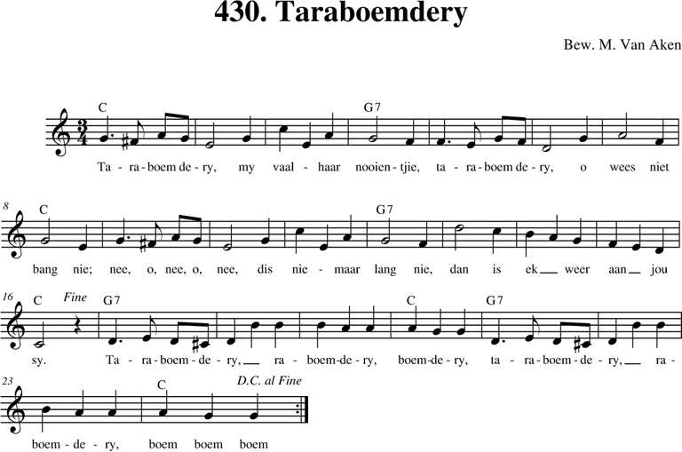
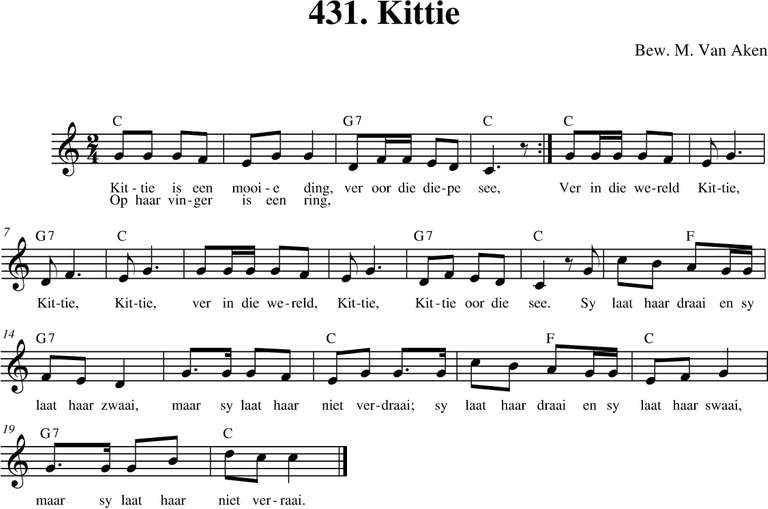
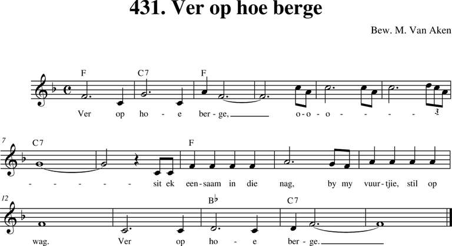
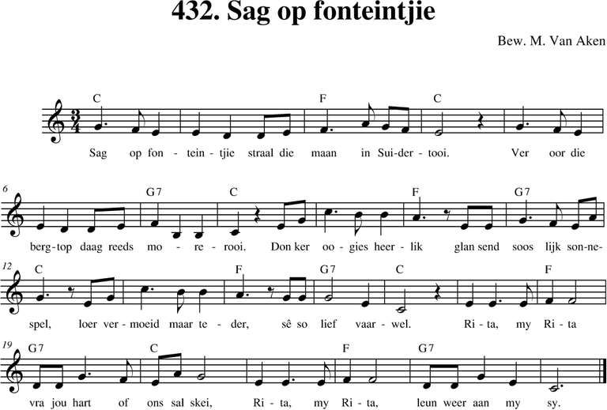
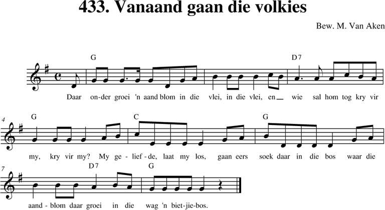
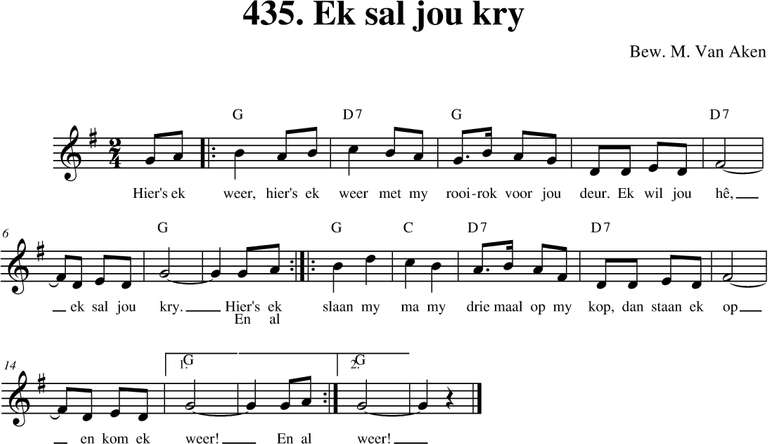
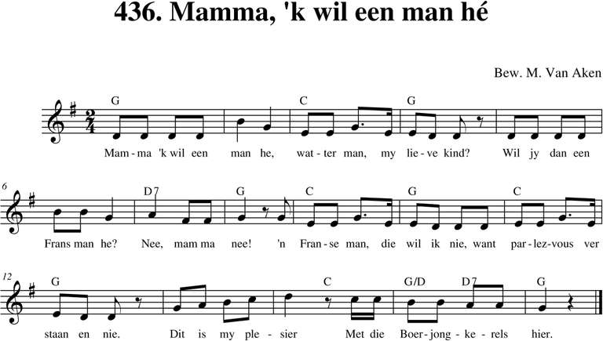
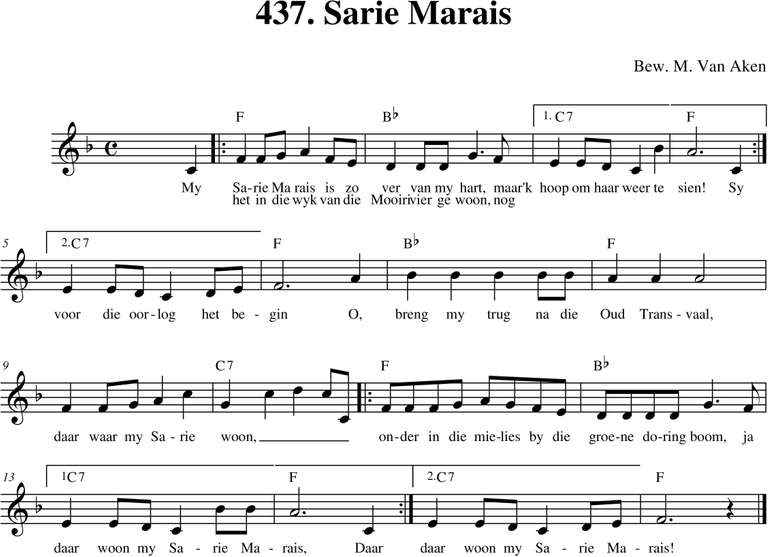
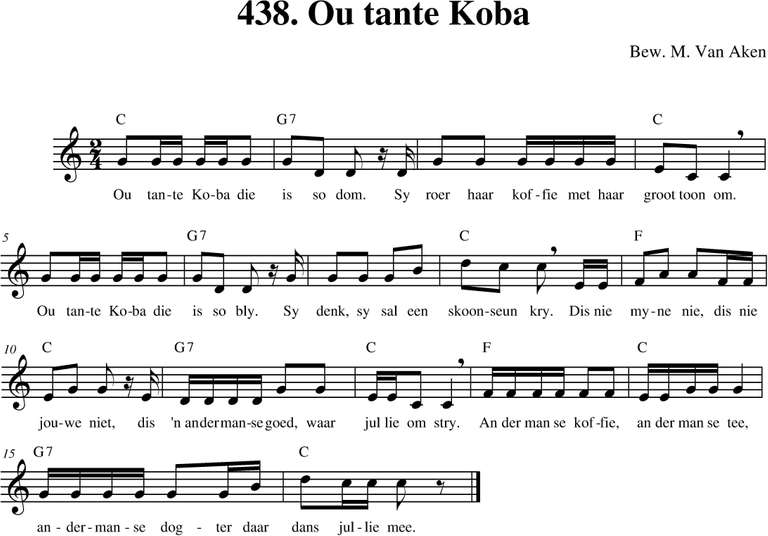

Menu
Bladeren
Alle liederen
p. 1-99
p. 100-199
p. 200-299
p. 300-399
p. 400-499
p. 500 e.v.
Taal
Nederlands
Frans
Engels
Duits
Latijn
Zuid-Afrikaans
Personen
Albrecht Rodenbach
Armand Preud'homme
Emiel Hullebroeck
Eugeen De Ridder
Jozef Simons
Philipp Silcher
René De Clercq
Stephen Foster
Meer...
Thema
Clubliederen
Ceremonies
Studentenleven
Historiek
Volk en land
Verleden
Bezinning
Were di
Pintjedrinken
Minne
Stemming en luim
NIEUWS
taal
Zuid-Afrikaans
(23)

430. Taraboemdery
31/12/2018

431. Kittie
31/12/2018

431. Ver op hoe berge
31/12/2018
432. En as ek kom te sterwe
12/12/2018

432. Sag op fonteintjie
31/12/2018

433. Vanaand gaan die volkies
31/12/2018
434. Gertjie
12/12/2018

435. Ek sal jou kry
31/12/2018

436. Mamma, ´k wil ´n man hê
12/12/2018

437. My Sarie Marais
12/12/2018

438. Ou tante Koba
31/12/2018
Vorige
Volgende